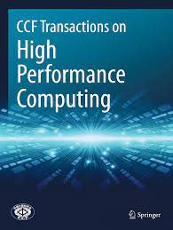

CCF Transactions on High Performance Computing
Call for Papers - Special Issue on Memory Architectures and Systems for Modern Applications
Modern data centric applications, such as artifical artificial intelligence (AI) workloads, graph data analysis, IoT systems, have emerged and been widely used in our daily life. These applications keep raising the requirements of large capacity, high performance, low power consumption, and high reliability for the whole memory hierarchy, which may be difficult to be satisfied by traditional memory architectures and systems. On the other hand, with the rapid advancement of memory technologies, various emerging memory technologies have been proposed to mitigate the problems mentioned above. These emerging memory technologies have the advantages of high density, low standy power, etc. However, they also face the challenges of programming overhead, limited lifetime, and reliablility issues. Thus, to leverage the uniques features and handle the limitations of these emerging memory technologies, we are expecting innovations in memory architecture and system designs.
The goal of this Special Issue is to present the novel ideas, methods, as well as efforts for resolving the above challenges, and to improve the efficiency of memory architectures and systems for modern applications. Extended versions of papers published in conferences, symposiums or workshop proceedings may be permitted. Survey papers will also be considered.
Topics of interest include, but are not limited to:

Application-specific memory architectures and systems
- Memory for deep neural networks
- Memory for neuromorphic architectures
- Memory for graph computing
- Memory for big data analytics
- Memory for mobile healthcare applications
- Memory for IoT applications
- Memory for wearable applications
- Application-specific memory controller design
- Application-specific cache design
- Application-specific storage system
- Memory architectures for non-volatile memory
- Memory and storage systems for non-volatile memory
- Near-data computing architectures and systems
- In-memory computing architectures and systems
- In-storage architectures and systems
- Other novel architectures for emerging memory technologies
The PDF version of CFP can be find here.
Guest Editors
Guangyu Sun, Peking University, China
Liang Shi, East China Normal University, China
Jingtong Hu, University of Pittsburgh, USA
Manuscript Preparation
Papers must contain original contributions and are not currently under review by a conference or a journal. In addition, the manuscripts should be prepared in accordance with the journal standards.
Instructions for Authors are available online at CCF THPC - Springer
Important Dates
Submission Deadline: February 28, 2022
Acceptance Notification: March 31, 2022
Expected Publication Date: June, 2022
Manuscript Submission
Manuscripts should be submitted online at Submission Website
The cover letter should report the following statement: “This paper is submitted for possible publication in the Special Issue on Memory Architectures and Systems for Modern Applications.” Authors must select article type “SI: Memory Architectures and Systems for Modern Applications” in Editorial Manager of the submission to be considered for this special issue. All manuscripts will be subjected to the peer review process.
If you have any questions, please email to the Guest Editor Guangyu Sun at gsun@pku.edu.cn, Liang Shi at lshi@cs.ecnu.edu.cn, Jingtong Hu at jthu@pitt.edu.